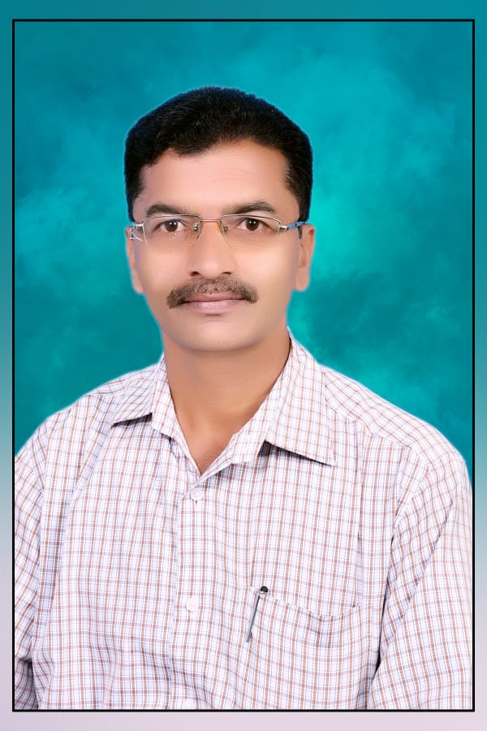

Your dedicated online guide for Marathi, Geography, and NMMS exam preparation. Learn at your own pace!
Watch Demo VideoA sample lesson demonstrating clear explanation and visual aids for map work and subject mastery.
Strategy video, crucial for NMMS scholarship exam preparation.
Find the perfect plan for your grade level.
Complete video course covering Marathi and Geography with clear, easy explanations. Designed to help students master all NMMS concepts and score confidently in the exam.
View NMMS Videos →Detailed chapters, map reading, and question-answer sessions to ace your board exams.
Explore Geography →Clear and simple explanations of grammar rules and writing skills for all grades.
Explore Marathi →The clear path to academic success in Maharashtra.
Content strictly follows the Maharashtra State Board curriculum , ensuring you study exactly what you need for exams.
Lessons are taught in clear and simple Marathi, making complex topics accessible to all students.
High-quality education should be free. Access all videos and resources without any subscription fees.

पदवी: [ M.A., B.Ed. ]
तानाजी पाटील पिशवीकर हे शिक्षण क्षेत्रात ३१ वर्षांहून अधिक अनुभव असलेले एक उत्साही
आणि आदरणीय मार्गदर्शक आहेत. त्यांनी M.A. आणि B.Ed. अशी पदवी प्राप्त केली आहे आणि
त्यांचे मुख्य विषय मराठी आणि भूगोल हे आहेत.
त्यांच्या सोप्या व प्रभावी शिकवण्याच्या शैलीमुळे विद्यार्थ्यांना अवघड संकल्पना सहज समजतात.
शिक्षण क्षेत्रातील उत्कृष्ट कार्याबद्दल त्यांना अनेक शैक्षणिक पुरस्कार प्राप्त झाले आहेत,
जे त्यांच्या अथक प्रयत्नांची साक्ष देतात. त्यांचे एज्युकेशन YouTube चॅनल हजारो
विद्यार्थ्यांसाठी प्रेरणास्थान बनले आहे.
पदवी: [ M.A., B.Ed. ]
सुरज शिवाजी पाटील हे शिक्षण क्षेत्रात २ वर्षांचा अनुभव असलेले एक उत्साही आणि
समर्पित शिक्षक आहेत.
त्यांनी M.A. आणि B.Ed. अशी पदवी प्राप्त केली आहे आणि त्यांचे मुख्य विषय मराठी
आणि इतिहास हे आहेत.
त्यांच्या प्रभावी आणि सोप्या शिकवण्याच्या पद्धतीमुळे विद्यार्थ्यांना विषय समजणे सोपे होते.
शिक्षण क्षेत्रात अल्पावधीतच त्यांनी विद्यार्थ्यांचा विश्वास आणि आदर मिळवला आहे.
त्यांचे शैक्षणिक मार्गदर्शन विद्यार्थ्यांना प्रगतीकडे प्रेरित करते.
पदवी: [ M.A., B.Ed. ]
तानाजी पाटील पिशवीकर हे शिक्षण क्षेत्रात ३१ वर्षांहून अधिक अनुभव असलेले एक उत्साही
आणि आदरणीय मार्गदर्शक आहेत. त्यांनी M.A. आणि B.Ed. अशी पदवी प्राप्त केली आहे आणि
त्यांचे मुख्य विषय मराठी आणि भूगोल हे आहेत.
त्यांच्या सोप्या व प्रभावी शिकवण्याच्या शैलीमुळे विद्यार्थ्यांना अवघड संकल्पना सहज समजतात.
शिक्षण क्षेत्रातील उत्कृष्ट कार्याबद्दल त्यांना अनेक शैक्षणिक पुरस्कार प्राप्त झाले आहेत,
जे त्यांच्या अथक प्रयत्नांची साक्ष देतात. त्यांचे एज्युकेशन YouTube चॅनल हजारो
विद्यार्थ्यांसाठी प्रेरणास्थान बनले आहे.
Hear from students who achieved their goals with T.T.Patil Pishavikar